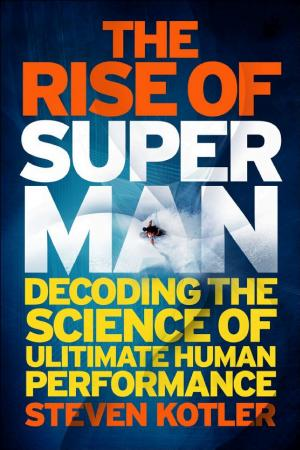

3.2.2 — Flow e limiti estremi
C’è un principio di progettazione personale che attraversa tutti questi dati: la continuità batte l'eroismo. Sessioni brevi ma frequenti, routine condivise e feedback semplici (passi, respiro, recupero) creano aderenza nel lungo periodo molto più dei picchi motivazionali. È la stessa logica del training: piccoli carichi sostenibili, ripetuti, che nel tempo diventano trasformazione (🏃 ff.86.1 Se non ti muovi, muori). Ma c'è un livello successivo, dove il carico smette di essere sostenibile e diventa estremo — e proprio lì il flow raggiunge la sua forma più pura. Steven Kotler, in The Rise of Superman, documenta come negli sport estremi la possibilità concreta di morire renda il flow non un optional ma una condizione di sopravvivenza: dagli scacchi alle pareti della Patagonia, la posta in gioco calibra la concentrazione (♟️ ff.122.3 Dagli scacchi alla Patagonia). L'effetto Bannister lo conferma su un piano diverso: dopo che Roger Bannister corse il miglio in meno di 4 minuti nel 1954, record che si credeva impossibile, decine di atleti lo replicarono nei mesi successivi. Mitchell Hutchcraft ha portato il principio all'estremo con il Project Limitless — un triathlon da 12.000 km — dimostrando che l'innalzamento dell'asticella risponde ai livelli superiori della piramide di Maslow: quando i bisogni primari sono soddisfatti, la ricerca di stimoli non si spegne, accelera (🔺 ff.122.4 Piramidi in 4 minuti?). La restrizione della metionina migliora la funzione mitocondriale e la longevità[1]. Sinan Aral, professore all’MIT[2], ha studiato Strava come social sportivo: dal 2018 i giri in bici in compagnia sono il 50% più lunghi, le corse il 20% più frequenti con qualcuno. Il dato più bello viene da uno studio che ha usato il meteo come perturbazione casuale[3]: un corridore in Arizona correva meno nei giorni di pioggia a New York, se aveva un amico newyorkese su Strava. Vedere un amico correre 1 km in più ci spinge a fare almeno 750 metri in più. Dieci minuti extra dell’amico = tre minuti extra nostri. Il contagio sportivo è misurabile, asimmetrico, e passa dai social (🕸️ ff.17.3 Social network positivi?).
Ma la corsa non è solo fisiologia o contagio sociale: per molti è diventata una vera e propria religione laica. Costeggiando le 78 statue di personaggi illustri in Prato della Valle a Padova durante una maratona, si ripercorre una tradizione millenaria di pellegrinaggi. Lo sport può essere una risposta ai traumi familiari e diventare una nuova religione[4]: i membri di questa setta parlano in codice — VO2 max, BPM — e si salutano con reverenza mentre corrono, come fossero preti. Jamie Doward, nel Guardian, scrive: “Corriamo perché gran parte della vita è frustrante e futile, e solo contrastandola con qualche sorta di dolore siamo in grado di fare un atto di sfida alle Moire che complottano sulla nostra vita. Correre ci permette, seppur brevemente, di entrare in un altro mondo. La maratona è l’equivalente odierno del pellegrinaggio medievale.” (🔱 ff.57.1 Tra miti greci, filosofia e nuove religioni).
Ma non è solo la mente a spingere i limiti: è anche la tecnologia ai piedi. Le AIR ZOOM ALPHAFLY NEXT% sono praticamente le scarpe usate da Kipchoge a Vienna per abbattere il record delle due ore[5] — e danno una bella mano (circa 5 s/km, ossia 3 minuti e 30 secondi su una maratona). Quanto vale il vento? Siemens ha studiato con simulazioni il record mondiale segnato a Monza[6]: i pacers e la macchina-pacemaker danno un guadagno complessivo di 7,3 W che si traducono in 4’35” in meno sulla maratona — più delle scarpe. E poi c’è chi i limiti li somma: David Kilgore ha vinto il World Marathon Challenge: 7 maratone in 7 giorni su 7 continenti[7]. Quando il corpo umano si trasforma in problema di ingegneria — scarpe, aerodinamica, logistica globale — la domanda non è più se sia possibile, ma chi paga il biglietto (🥳 ff.57.4 Volare, oh-oh).

Gli stimolatori muscolari tipo Tesmed somigliano al rimedio gadget per un problema creato da noi stessi: sedentarietà come causa. Ma se per motivi psicologici, economici o sociali alcune persone non riescono a uscire dal loop dannoso della vita moderna, è bene offrire soluzioni. La vera questione è se il sistema tecno-sanitario vuole punire o accompagnare il fannullone: la risposta emergente — integrativi di movimento, farmaci GLP-1, neurostimolatori — privilegia la seconda via. Sempre più fannulloni?[9] (💊 ff.75.3 Sempre più fannulloni?).
I benefici sulla salute iniziano già a 4.000 passi al giorno[10] — una soglia molto più bassa del celebre 10.000. Gli studi di coorte mostrano una riduzione del 9-39% del rischio di mortalità per tutte le cause in questa finestra, con rendimenti decrescenti oltre. Il messaggio operativo ribalta il marketing del fitness: la differenza tra sedentarietà totale e 4.000 passi pesa più di quella tra 4.000 e 10.000.